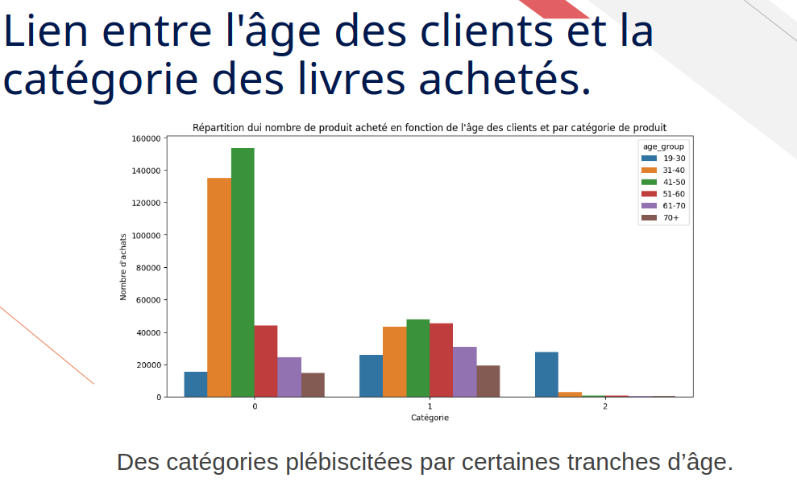

Analysez les ventes d'une librairie — Lapage (indicateurs & comportement client)

Mission réalisée pour Lapage, librairie historiquement physique ayant ouvert son site de vente en ligne il y a 2 ans. La responsable Marketing (Annabelle) et la Business Intelligence Analyst (Julie) avaient besoin d'un état des lieux complet de l'activité pour orienter les décisions à venir : évolutions d'offres, ajustements de prix, ciblage clientèle. L'analyse devait couvrir deux volets — les indicateurs de vente globaux, et une analyse fine du comportement client en ligne, comparable à la connaissance déjà acquise sur les points de vente physiques. Restitution attendue en comité de direction (CODIR), avec une posture de conseil stratégique plutôt qu'un rapport technique.
- Source : 3 fichiers fournis par l'entreprise — clients, produits, transactions — déjà nettoyés en amont, mais avec vérification et traitement complémentaire des valeurs manquantes et doublons de mon côté.
- Volumétrie : historique des ventes en ligne depuis l'ouverture du site, pour un chiffre d'affaires cumulé de 11,8 M€.
- Limite connue dès le départ : les données clients ne couvrent que la période depuis 2021, insuffisante pour capter des tendances de comportement sur le très long terme.
- Calcul des indicateurs clés de vente (CA total, répartition par catégorie de produits, top/flop produits) et suivi du chiffre d'affaires via une moyenne mobile mensuelle pour lisser les variations et faire ressortir la tendance de fond.
- Segmentation de la clientèle : détection d'une clientèle B2B minoritaire en nombre mais représentant une partie non négligeable du CA total, avec un comportement d'achat régulier et diversifié — un profil suffisamment atypique pour biaiser les analyses si non isolé.
- Analyse de corrélation systématique entre profil client (âge, genre) et comportement d'achat (dépense
totale, fréquence, taille du panier, catégories achetées), avec sélection rigoureuse du test statistique
adapté à chaque cas :
- Test de normalité (Shapiro-Wilk) systématique avant de choisir entre Pearson et Spearman.
- Corrélation de Spearman (non paramétrique) pour âge vs dépenses, âge vs fréquence d'achat, âge vs taille de panier — les variables ne suivant pas une loi normale.
- ANOVA pour comparer les moyennes de dépense, fréquence et panier entre catégories d'âge.
- Test du Chi² pour la relation entre âge et catégorie de produits achetés, et entre genre et catégories de livres.
- Analyse de l'historique de chiffre d'affaires : Évaluation des revenus depuis le lancement de la plateforme et modélisation de la tendance de fond à l'aide d'une moyenne mobile mensuelle.
- Analyse démographique par genre : Évaluation de l'impact du genre sur le comportement d'achat, démontrant l'absence de levier commercial malgré l'existence d'une corrélation statistique.
- Étude de l'âge vs valeur client : Caractérisation de la relation complexe et non linéaire entre l'âge des acheteurs, leur niveau de dépense et leur fréquence d'achat.
- Validation statistique des préférences : Réalisation de tests de dépendance (Chi²) confirmant une relation statistiquement significative entre les tranches d'âge et les catégories de produits plébiscitées.
- Feuille de route stratégique pour le CODIR : Livraison de recommandations hiérarchisées (court, moyen et long terme) visant à fidéliser le cœur de clientèle, structurer une offre B2B dédiée, exploiter la saisonnalité, stimuler le réachat chez les plus jeunes et optimiser l'expérience utilisateur pour les clients plus âgés.
La marge par produit n'était pas disponible dans les données fournies, alors qu'elle serait une information cruciale pour compléter l'analyse de performance au-delà du seul chiffre d'affaires. Cela rendrait l'analyse plus pertinente et apporterait des éléments indispensables à la prise de décision pour l'avenir de Lapage.